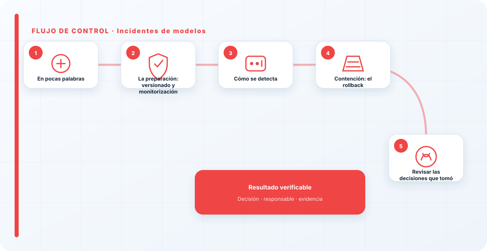
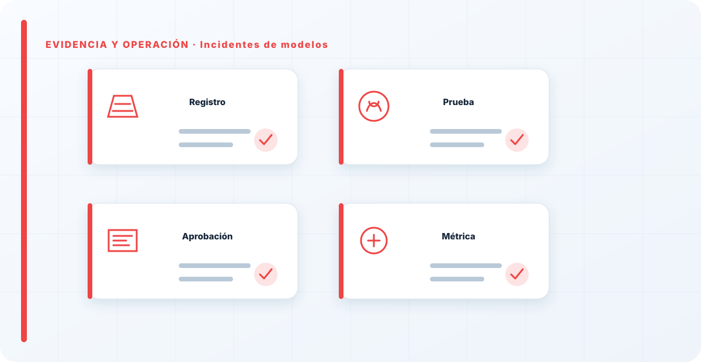

En pocas palabras
Un incidente de modelo no siempre es un ataque; muchas veces es el propio modelo que, en producción, empieza a fallar: se degradó por deriva, alguien lo reentrenó con datos malos, o una versión nueva salió peor que la anterior. Lo característico es que el sistema funciona técnicamente —está "arriba"— pero está tomando decisiones malas, y eso puede afectar a personas sin que salte ninguna de las alarmas de siempre. Es un incidente silencioso, y por eso la preparación importa aquí más que en casi ningún otro: tu capacidad de respuesta la decides antes de que ocurra nada, el día que eliges si vas a versionar y monitorizar.
La preparación: versionado y monitorización
La respuesta a un incidente de modelo se gana con dos cosas que tienen que existir de antemano: el versionado y la monitorización. El versionado es tu botón de emergencia —te permite volver a una versión estable conocida cuando la actual falla—; la monitorización es tu sistema de alarma —es lo que hace visible una degradación que, por definición, no da errores—. Sin la primera, no puedes contener; sin la segunda, no te enteras del incidente hasta que el daño acumulado es grande.
He visto equipos completamente paralizados ante un modelo que fallaba, porque no podían volver atrás: no habían versionado, y la versión buena de hacía un mes ya no existía de forma recuperable. Y he visto degradaciones que llevaban meses haciendo daño porque nadie monitorizaba el rendimiento real. Estas dos capacidades no se improvisan el día del incidente; o están construidas, o no las tienes cuando más falta hacen.
Cómo se detecta
Un incidente de modelo se detecta por la monitorización, si la tienes: una caída del rendimiento, un drift que cruza un umbral, un patrón de quejas o de errores en las decisiones que el modelo toma. Aquí se ve el valor de vigilar el modelo de verdad: sin monitorización, un incidente de degradación es invisible hasta que alguien lo nota desde fuera —un cliente, un afectado, un auditor—, que es la peor forma de enterarse.
Cuando detecto la señal, lo primero que investigo es qué cambió. ¿Derivaron los datos de entrada porque cambió el mundo real? ¿Se desplegó una versión nueva justo antes? ¿Alguien reentrenó el modelo? ¿Cambió el uso que se le da? Distinguir entre una deriva natural y algo que se rompió es clave, porque la respuesta es distinta: la deriva pide reentrenar, una versión mala pide rollback, un cambio de uso pide revisar si el modelo sigue siendo adecuado.

Contención: el rollback
La contención más limpia en un incidente de modelo es el rollback: volver a una versión estable conocida. Por eso el versionado no es un capricho técnico, es literalmente tu herramienta de contención. Si el problema es una versión mala recién desplegada, revertir a la anterior corta el daño de inmediato y te da tiempo para investigar con calma en lugar de bajo presión.
Si el problema es deriva —y no una versión concreta—, la contención puede ser distinta: quizá haya que sacar el modelo de las decisiones críticas hasta reentrenarlo y validarlo, dejando esas decisiones en manos humanas mientras tanto. Contener, en modelos, es dejar de tomar decisiones malas cuanto antes, aunque sea a costa de perder temporalmente la función automática. Es preferible un proceso más lento y manual unos días que seguir tomando decisiones malas a toda velocidad.
Revisar las decisiones que tomó
Los incidentes de modelo tienen una fase que los de sistema clásico no tienen tan marcada: revisar las decisiones erróneas que el modelo tomó mientras estaba degradado. Un servidor caído no toma decisiones malas; un modelo degradado sí, y esas decisiones pueden haber afectado a personas —solicitudes mal clasificadas, casos mal priorizados, recomendaciones equivocadas— durante todo el tiempo que estuvo fallando sin que nadie lo notara.
Por eso, contenido el incidente, hay que preguntarse: ¿qué decisiones tomó el modelo mientras estaba mal, y hay que revisarlas o corregir su efecto? Esta parte se olvida mucho porque, con el modelo ya arreglado, parece que el incidente terminó. Pero si durante dos semanas el modelo estuvo perjudicando a un grupo de personas, arreglar el modelo no deshace ese perjuicio; hay que ir a esas decisiones y remediarlas. Ignorarlo es dejar el daño hecho aunque el sistema ya funcione.
Erradicar la causa
Quitar la causa depende de qué la provocó. Si fue una versión mala, la erradicación pasa por entender por qué se desplegó sin detectar que era peor —casi siempre, porque se reentrenó y no se validó bien la versión nueva como si fuera nueva—. Si fue deriva, la erradicación es reentrenar con datos actuales y, sobre todo, reforzar la monitorización para detectarla antes la próxima vez.
En ambos casos, la causa raíz suele apuntar a un fallo del ciclo de vida del modelo: faltó validación antes de desplegar, o faltó monitorización para detectar la degradación a tiempo. Erradicar de verdad es corregir ese proceso, no solo esta instancia. Un modelo que se reentrena y despliega sin validar volverá a dar el mismo susto con la siguiente versión.
Recuperación, comunicación y lecciones
Recuperar es desplegar una versión buena —la anterior estable o una reentrenada y validada como es debido— y confirmar que el rendimiento vuelve a lo esperado. La comunicación, como en todo incidente, debe ser honesta: si el modelo tomó decisiones que afectaron a personas, eso hay que comunicarlo hacia la dirección con su impacto real, porque puede haber consecuencias que exceden lo técnico.
Y la lección apunta casi siempre a dos sitios: faltaba monitorización que lo detectara antes, o un reentrenamiento salió a producción sin validarse. Ambas se arreglan reforzando el ciclo de vida del modelo. Lo más importante que aprendo de estos incidentes es que la capacidad de respuesta se decide antes del incidente: el día que eliges si vas a versionar y monitorizar. Con eso, tienes un botón de emergencia y unos ojos; sin eso, tienes un problema silencioso y ninguna salida rápida cuando por fin lo descubres.

Comunicación y roles
Como todo incidente, el de modelo necesita roles claros y comunicación honesta, pero tiene un matiz propio derivado de su carácter silencioso. Al no haber una caída visible, es fácil que el incidente se viva dentro como "un ajuste técnico" y no como lo que puede ser: un periodo en el que el sistema estuvo tomando decisiones equivocadas que afectaron a personas. Por eso la comunicación hacia la dirección debe dejar claro no solo que el modelo falló, sino durante cuánto tiempo y con qué impacto en las decisiones tomadas.
Esto importa especialmente cuando esas decisiones afectan a terceros —clientes, solicitantes, usuarios—. Si el modelo estuvo semanas clasificando mal o recomendando mal, puede haber personas perjudicadas que tienen derecho a que se revise su caso, y eso puede tener implicaciones legales y reputacionales que la dirección necesita conocer para decidir. Minimizar un incidente de modelo por ser "invisible" es el error que lo convierte, más tarde, en un problema de confianza mucho mayor que el técnico original.
Durante el incidente, registro las decisiones y los tiempos: cuándo empezó la degradación, cuándo se detectó, qué se hizo. Ese registro no es burocracia; es lo que permite, después, saber qué ventana de decisiones hay que revisar y demostrar que se actuó con diligencia. En un incidente silencioso, la documentación honesta del "desde cuándo" es tan importante como el arreglo técnico.
Volver a producción con confianza
Como con los agentes, un modelo que ha protagonizado un incidente no vuelve a producción por defecto: vuelve cuando se ha validado que la versión que se despliega es buena de verdad, no solo mejor que la rota. La tentación de reactivar rápido para "recuperar el servicio" es fuerte, pero desplegar con prisa una versión no validada es arriesgarse a un segundo incidente encadenado con el primero.
Por eso el regreso pasa por la misma puerta que debería haber pasado siempre: validación en condiciones realistas antes de producción, y una monitorización reforzada las primeras semanas para confirmar que la degradación no vuelve. Un modelo que vuelve validado y bien vigilado cierra el incidente; uno que vuelve deprisa y a ciegas solo lo aplaza. La recuperación no es reactivar, es reactivar con garantías.
Con los modelos, tu capacidad de respuesta la decides mucho antes del incidente, el día que eliges si vas a versionar y monitorizar o no. He visto equipos paralizados ante un modelo que fallaba porque no podían volver atrás. Si versionas, tienes rollback; si monitorizas, te enteras a tiempo; si no, tienes un problema silencioso sin salida rápida. La respuesta a incidentes de modelos se gana en la fase de diseño, no en la sala de crisis.
Los errores que veo una y otra vez
- No versionar, y no poder hacer rollback cuando una versión sale mala.
- No monitorizar, y detectar la degradación tarde y desde fuera.
- Reentrenar sin validar la versión nueva y meter una peor.
- No revisar las decisiones malas que el modelo tomó mientras estaba degradado.
- No investigar la causa: datos, versión o uso.
- Dar el incidente por cerrado al arreglar el modelo, sin remediar el daño hecho.
Referencias y marcos relacionados
Contenido educativo y técnico. No sustituye asesoramiento jurídico ni una auditoría formal.